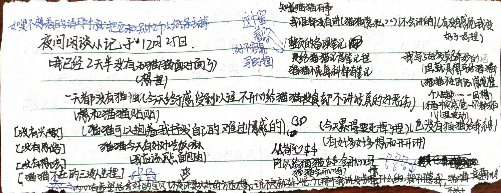

都怪我，如果不是我总贪玩，
数学课讨论的时候回头的话。
是没有事的，都是我，出了问题
还想冤枉到猫猫身上，都
是我的问题，所以我会改的
猫不要难过，好嘛？
（我再也不会这样欺你了）（对不起）（对不起猫猫）（我真的错了）（虽然…也可能像以前一样是能量不够了，但是没有表情真的很担心）（我好像一直在拖累猫猫）（一直一直）（所以如果是讨厌我也是可以理解的）（强迫猫猫做不想做的）（还凶猫猫）（还总是恐吓猫猫）（我真的真的会改的）（会政的）（所以有失望吗）（我并不算得上一个好人）（还耽误猫猫上课）（不会再这样了）（如果…如果再这样的话）（可以丢掉我的）
我好恶心
学校好吵捏，没有猫猫好无聊，下了一节计算机课的Wx和米游社但是登不上（网页的不可以和猫猫讲话），我好难过，一整天都没有听到开开的声音，碰到开开的爪爪了，没有开开，一点都不开心，而且回来了要夸我哦，记笔记写的爪爪都疼了，
虽然生物笔记你还是要再写一遍到“恋”的本子上（没有找到捏）我还是觉得我手抄一遍会更有心意（虽然其实我也不觉得生日有多么多么重要，但是在那一天做什么家里都有优待捏）
（和开一起的每一天都好重要捏，像生日一样值得纪念所以每天都想给猫猫礼物（投食）
有种我没肉吃猫猫也必须有的感觉→开开对我超重要 像太阳对地球一样重要（有猫猫才有光有生命捏）
捡笔偷袭计划失败aaaa胳膊太胖卡住了（我要减肥）
讲那个梦
我把 /ᐠ . ̫ .ᐟ\ฅ
骗出去玩。去了一个叫美梦屋舍的地方（一切梦皆为现实，一切美好将永被留存）然后去上了个厕所（我），回来的时候发现你(和一些别的玩家)面前有空杯子，问你，你讲是发的饮料，走近屋子，那里可以算得上破旧了，鲜红色的颜料有些诡异，我想让
/ᐠ . ̫ .ᐟ\ 和我离开却听见（周围）赞叹的声音，抓着猫爪，虽然因为有人 /ᐠ . ̫
.ᐟ\ 有些紧张但还是可以看出对那个破旧的古堡（美梦屋舍）很赞叹，进去发现那诡异的吓人，墙上有张纸条，写着:那是进入梦的药水，没有喝下的人，不会进入梦中），就很抽象一个梦，
问其他人都说看不见（不行写不了一点了）太可怕了，闪.
（呐，我是坏人了（只能蹦一小会了，我还是少蹦吧）
（完了这场批评不是冲王孖灵来的）
（冲我来的www）
（总对猫猫语言上的欺负）
（又一次又一次冲我来了
（完蛋了)(又又双一次）
（猫猫还对我这么好）
（心虚了)(难过了）（完蛋了）
（s掉了）
（开开会不高兴麻）
（可怕）（ a aaaaa）
（还是愿意猫猫讲的）（吓人）
（对不起猫猫了
（aaaaaaa）
（焦虑了）
（www）
同性胆斥，相同性质的人准作？
骗你的，他比你恶劣多了，宽于律己，严以律人，
说大道理还不讲道理，站在那里就不会有太多人喜欢吧，还又和snow讲的太冷了目的性特别重，重到book思议
而老婆不一样，默默付出好可爱握～
可爱的宝贝，还会贴贴，喜欢关心人（总把我的感觉放前面）虽然我不太想这样，我也想要对猫猫好）我不开心也不会不管我（喜欢猫猫和周煜然一点都不一样）
是哦，会陪着你（是本心）也算是一丢丢的责任感嘛!）怎么能放着自己老婆独在外面，而且老婆好缺觉的
开：我是那种缺了半小时觉都会在课上补回来的
（这怎么让人放心啊）（再讲只有10个人被点走了）（宝贝在那多不平衡）
[其变自己弄的话心理上并有多感觉］
［就是头脑一空，轻飘飘的~]
有喜欢的人之后，我感觉吃东西这种令人开心的事还是要喜欢的人一起才开心，有帮你记笔记捏，好多好多（要累死啦）和你讲哦，我自己都没记过笔记捏，累死啦，还有送的平安果，圣诞节你都没来上学，都没有节日意义啦，不过有感觉好一点嘛（就是问问而已）不想讲也没关系）（那个......没有想让你给我买东西）开开站在那里就很让我开心啦，包括生日也是，我还有钱崽可以自己买哒。贫穷的开开鸭，我…那个…你花了多少钱鸭，我可以帮你报销，别饿着自己了捏，不来的话，好想你真的好想你，我有点担心你，你都没有在宿舍，昨天也讲不想回家那我的可怜小猫会在哪里呢？你会在哪里呢？真的好想好想见到你，不过自己养一养睡一觉会感觉好点吗。
时 12月25日周一
情绪总是一个人不好
自己的活，心情会越来越沉重
提不起对周边的情绪，那个
如果不知道怎样发泄情绪的话可以抱着我捏，很重要的人嘛，
那个我昨天看见你讲那个，也知道自己一个人待着可能好一丢丢，但是我希望你情绪崩溃的时候我可以在你边陪着你嘛，我可以成为你依靠的人的我也可以安慰别人的.心情不的话，一个人问着一定是不可以的，我会陪你，你什么都可以和我讲的，我重要的事情还是可以守口如瓶的，吃点甜食，会嘛抱着我。哭嘛，哭完了会好些吧，昨天听见你哭了（委屈会哭没有错，但是哭是一种情绪的发泄方式，难过会哭，崩溃也可以买，巨大的情绪变动都可以哭）我会一直陪你的，一直在你身边陪你.（不希望你变得越来越沉重）希望你可以积极地活着呢会陪你，尽管话语太轻，但就像之前讲的想保护你呢你可以尝试去依靠我
（其实好脆弱也好坚强呢）← 开开
